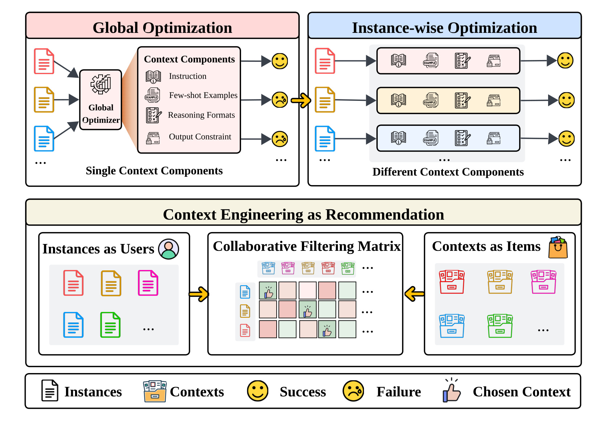
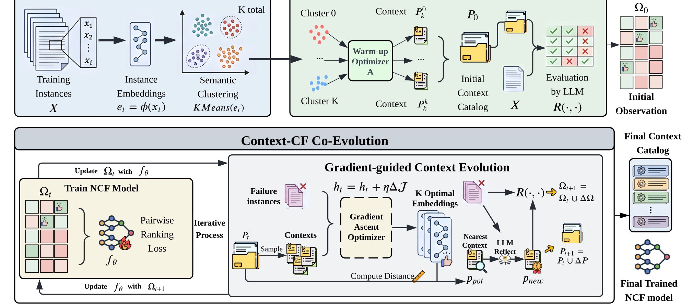
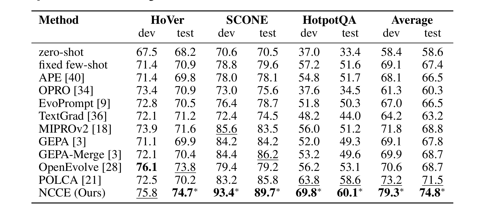
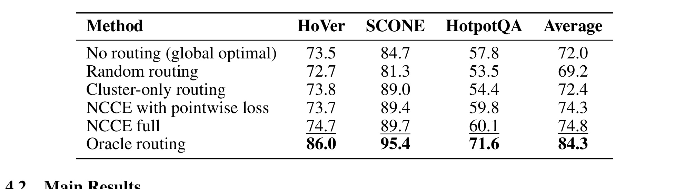
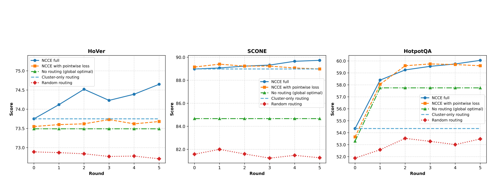
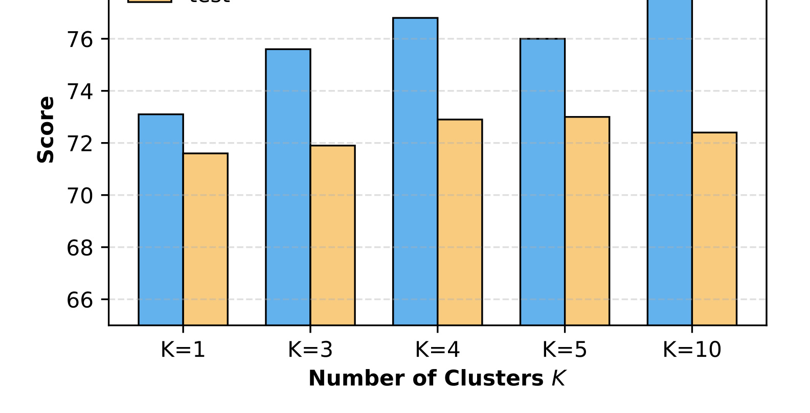
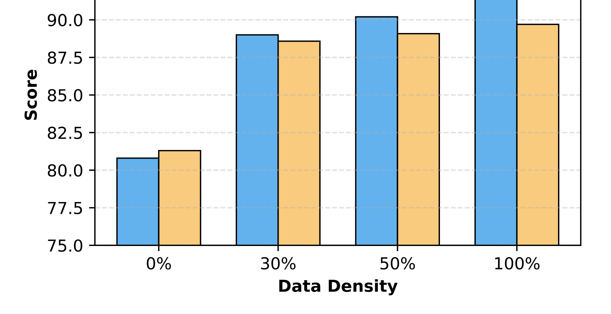
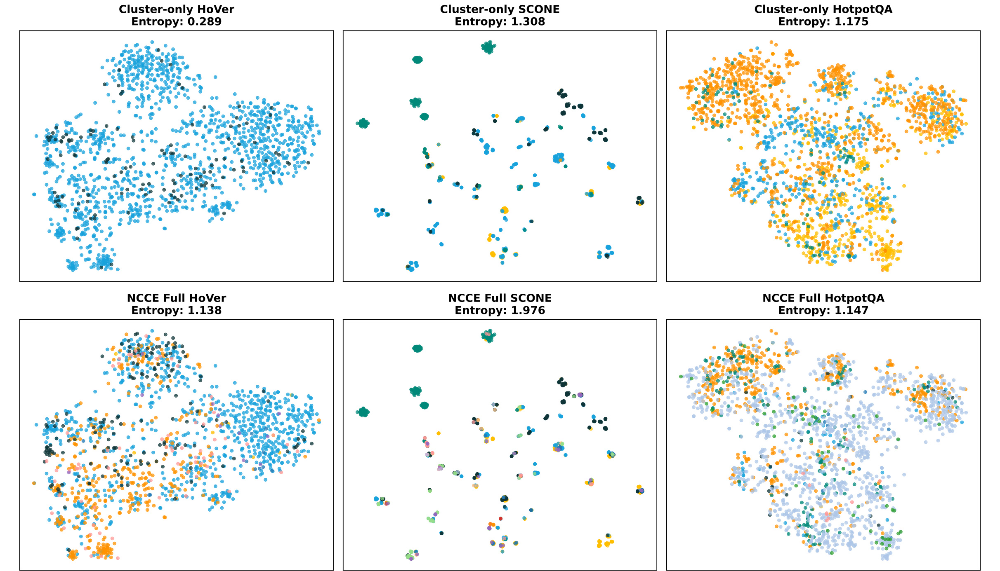

Contexting as Recommendation: Evolutionary Collaborative Filtering for Context Engineering 这篇论文来自以上海交通大学为主的一组作者，第一作者 Jiachen Zhu、Zhuoying Ou、Congmin Zheng 等均在论文首页标注为 Shanghai Jiao Tong University，合作作者还包括 University College London、Carnegie Mellon University、Hong Kong Polytechnic University 等机构。论文入口为 arXiv:2605.15721。论文正文脚注给出一个 anonymous.4open.science 的代码地址；本轮只核验到该地址出现在 PDF 中，未把它当作完全稳定的长期 GitHub 项目页。
这篇论文的核心判断很直接：自动 context engineering 不应该只是在训练集上寻找一个平均最优的全局 prompt，而应该像推荐系统一样，为每个输入样本选择最合适的上下文策略。作者把输入 instance 当作 user，把复合 context strategy 当作 item，把某个 context 作用在某个 instance 上是否答对当作 interaction signal，然后用一个轻量 Neural Collaborative Filtering 路由器学习 instance-context preference。方法名 NCCE，即 Neural Collaborative Context Engineering，真正想解决的是 LLM 推理场景里的“同一个 prompt 对不同样本的适配性差异”。
1. 背景和问题
LLM 的能力越来越强，但它对输入上下文仍然高度敏感。这里的上下文不是狭义的一句 instruction，而是包括任务说明、few-shot 示例、推理格式、输出约束等多个组件的复合策略。对于多跳问答、事实验证、语义解析这类任务，一个样本可能需要模型显式拆解证据链，另一个样本可能更需要严格的输出 schema，第三个样本可能主要受益于更贴近题型的 demonstrations。传统自动 prompt/context 优化方法大多把问题写成一个全局搜索：在候选空间里找一个策略，使训练集平均表现最大。这个假设在工程上方便，也符合 APE、OPRO、MIPROv2、GEPA 等方法的常见设定，但它把 instance-level heterogeneity 压扁成了平均数。
论文要反驳的正是这个“一刀切”的优化目标。作者认为，context engineering 的关键不只是发现高质量 context，而是对每个输入选择正确 context。这个视角和推荐系统天然相似：用户不会都喜欢同一个 item，输入样本也不会都适合同一套 prompt 组件；推荐系统靠稀疏交互矩阵学习 user-item preference，context engineering 也可以靠有限的 instance-context 评估学习偏好结构。区别在于，这里的 user 是输入文本，item 是可组合的 context strategy，interaction 是 LLM 在该样本上得到的任务正确性。

Figure 1 是论文动机最重要的一张图。上半部分对比了 global optimization 和 instance-wise optimization：前者从 instruction、few-shot examples、reasoning formats、output constraint 等组件里搜索一套单一组合，然后把这套组合应用到所有样本；后者承认不同 instance 需要不同 context components。下半部分把这个问题明确映射到 collaborative filtering matrix：instances as users，contexts as items，矩阵中的成功/失败就是交互信号，最终目标是为每个输入选择一个 chosen context。这个图的价值不在于提出复杂结构，而在于把 prompt 优化从“平均最优候选搜索”转成“个性化路由”。如果这个转写成立，许多推荐系统里的经验都能迁移过来：需要初始 item catalog，需要稀疏交互学习，需要 cold-start 泛化，也需要避免只扩大 catalog 却不学习路由。
论文的创新点因此有两层。第一层是建模范式：它把 context engineering 明确定义为 recommendation problem，而不是把推荐系统术语拿来做类比。第二层是训练机制：NCCE 不只是训练一个 router 从已有 context 里挑选，还会通过 Context-CF Co-Evolution 不断扩展 context catalog。这个设计回应了一个实际矛盾：如果候选 context 太少，路由器再聪明也只能在贫乏 catalog 中选择；如果只生成很多 context 而没有个性化路由，系统又会退回到全局最优或随机选择，无法利用多样性。NCCE 想让 catalog 和 router 一起变好。
进一步说，这里的“推荐”并不是把 LLM 应用到传统推荐业务，而是把推荐系统的偏好学习机制抽象出来。推荐系统面对的是用户和物品的稀疏交互，NCCE 面对的是样本和上下文策略的稀疏评估；推荐系统需要解决新用户、新物品和数据稀疏，NCCE 也需要对未见输入和新生成 context 做归纳泛化。因此这篇论文虽然主任务属于 LLM context engineering，但主类别可以归到推荐算法：它真正贡献的是把 collaborative filtering、pairwise ranking、catalog expansion 和 routing 这一整套推荐范式迁移到 prompt/context 优化。这个判断也解释了为什么作者没有只报告“更好的 prompt”，而是反复比较 No routing、Random routing、Cluster-only routing 与 Oracle routing。
从推荐算法角度看，这篇论文有意思的地方是它没有直接复用 ID-based CF。输入样本和 context 策略在测试时都可能出现新对象，单纯给每个 instance/context 一个固定 ID embedding 没有泛化能力。因此作者采用 semantic embeddings 和 inductive matrix completion 的设定，用冻结文本编码器表示 instance 与 context，再用 NCF 学习匹配函数。这让模型可以对未见过的新输入进行 zero-shot routing，也可以把新生成的 context 放入 catalog 后继续评估和学习。
2. 方法
2.1 复合 context 与全局最优的形式化
论文先把 context strategy 定义成一个复合配置：
符号解释：$p_j$ 表示第 $j$ 个上下文策略；$c_j^{inst}$ 是任务 instruction；$c_j^{demo}$ 是 few-shot demonstrations；$c_j^{reason}$ 是推理格式或 reasoning scaffold；$c_j^{out}$ 是输出约束。这个公式重要，是因为 NCCE 讨论的不是单一 prompt string，而是一套可被优化器组合和反思修改的上下文组件。
给定固定 LLM，论文把策略 $p_j$ 作用到样本 $x_i$ 上的任务结果写成：
符号解释：$R$ 是评估函数，可以理解为让目标 LLM 在输入 $x_i$ 和 context $p_j$ 下执行任务并得到 accuracy；$r_{ij}$ 是 instance-context pair 的交互标签，本文实验里主要是任务正确性。这里的 $r_{ij}$ 就对应推荐系统里的 user-item feedback，只是它来自 LLM 调用，而不是点击、购买或观看时长。
传统方法追求的是一个全局最优策略：
符号解释：$P$ 是候选上下文策略集合，$N$ 是训练样本数，$p^*$ 是在训练集总正确数或平均正确率上最优的一套 context。这个目标的问题是，它优化的是平均表现。如果一个策略在多数简单样本上稳定，却在某些多跳、状态跟踪或证据约束样本上失败，平均目标可能仍然选择它。NCCE 的核心批评是：全局最优不是没有价值，而是它无法表达同一数据集中不同样本对 context 的偏好差异。
因此论文把目标改成 instance-wise routing：
符号解释：$p_i^*$ 是针对第 $i$ 个输入样本的最优 context；同一个 catalog $P$ 中，不同样本可以被路由到不同策略。这个目标如果暴力求解，需要评估所有 $x_i,p_j$ pair，代价非常高。NCCE 不是全量枚举，而是从稀疏观测中学习兼容性函数。
2.2 从推荐视角建立可泛化路由器
为了让路由器能处理未见过的样本和新 context，论文采用 inductive matrix completion。它不用固定 ID，而用文本编码器给 instance 和 context 建语义表示：
符号解释：$\phi(x_i)$ 是输入样本的 frozen semantic embedding；$\psi(p_j)$ 是上下文策略的 embedding，论文中说 composite context 的表示聚合其多个组件；$f_\theta$ 是要训练的 preference model；$\hat r_{ij}$ 是预测的 compatibility score。这个设计的边界也很清楚：它把语义相似性作为泛化基础，假设语义相近的样本对 context 的相对偏好也相对平滑。这一假设后来被写进理论分析中的 Cluster Lipschitz Preference。
具体的 NCF 模型会把 instance embedding 和 context embedding 投影到共享潜空间：$u_i=W_x e_i$，$v_j=W_p h_j$。随后构造交互向量：
符号解释：$u_i$ 是样本 latent vector；$v_j$ 是 context latent vector；$\odot$ 表示逐元素乘积，用于建模类似矩阵分解中的匹配强度；$|u_i-v_j|$ 表示逐元素距离，用于显式刻画差异；分号表示拼接。这个交互向量比单纯内积更灵活，它允许 MLP 学到非线性偏好边界。
最终兼容性得分为：
符号解释：$\sigma$ 把 MLP 输出压到概率式得分区间；$\theta$ 是路由器参数。推理时，路由器对候选 catalog 里的每个 context 打分，选择预测最高的策略。这个推理成本相对低，因为不需要让 LLM 对每个候选 context 都执行完整任务，只要跑轻量 NCF 打分。
训练目标采用 pairwise ranking loss，而不是直接回归正确率：
符号解释：$D_{pair}$ 由观测交互构造，$(i,j,k)$ 表示对同一个样本 $x_i$，策略 $p_j$ 表现优于 $p_k$；$\hat r_{ij}-\hat r_{ik}$ 是模型预测的相对优势。作者选择 pairwise loss 的原因很像 BPR：样本本身难度不同，绝对正确率可能混入 instance difficulty；真正需要学习的是“对这个样本，哪个 context 排得更靠前”。Table 2 中 pointwise loss 略低于 full NCCE，也支撑了这个选择。
2.3 Cluster-based initialization：先建立可用的 context catalog
NCCE 的第一阶段是 cluster-based initialization。输入样本先被 embedding：$e_i=\phi(x_i)$，然后做 KMeans：
符号解释：$C_k$ 是第 $k$ 个语义簇，$K$ 是簇数。每个簇会交给 warm-up optimizer $A$ 生成一批 cluster-specific anchor contexts：$P_k^0=A(C_k)$，初始 catalog 为 $P_0=\bigcup_{k=1}^{K}P_k^0$。论文实验中 warm-up optimizer 使用 MIPROv2；也就是说，NCCE 不是否定强全局/局部优化器，而是把它们放在 catalog 初始化的位置上。
这个阶段的工程直觉是：完全随机的 context catalog 对 NCF 没有帮助，因为交互矩阵会充满低质量 item；只有一个全局最优 context 也不够，因为它提供不了多样偏好信号。按语义簇生成 anchor context 是折中方案：同簇样本共享一定任务需求，生成的 context 比全局策略更局部、更专门，但又不至于细到每个样本都单独优化。

Figure 2 展示了完整流程。左上角是 input data 与 semantic clustering，训练样本经过 embedding 后分成 $K$ 个簇；中上部是 warm-up initialization，每个簇通过 warm-up optimizer 得到 context，合并成 initial context catalog，并通过 LLM evaluation 得到初始观测矩阵 $\Omega_0$。下半部分是 Context-CF Co-Evolution：先用 pairwise ranking loss 训练 NCF model，再找失败样本和上下文嵌入方向，通过 gradient-guided context evolution 产生新的 context；新 context 被 LLM 评估后更新 $\Omega_{t+1}$，再反过来训练 NCF。右侧输出两个对象：final context catalog 和 final trained NCF model。图中最关键的箭头不是单向 pipeline，而是 catalog expansion 与 router training 之间的反馈闭环。
2.4 Context-CF Co-Evolution：用路由器反过来指导新 context 生成
在第 $t$ 轮，NCCE 已有 catalog $P_t$ 和交互集合 $\Omega_t$。作者先训练 $f_\theta$，然后识别 failure instances：
符号解释：$F_t$ 是当前所有策略都没能解决的样本集合；$R(x_i,p_j)=0$ 表示该 context 在该样本上失败。这个定义体现了 NCCE 的“补盲点”目标：不是随意生成更多 prompt，而是针对现有 catalog 无法覆盖的区域进化。
从失败集合采样一批 $B_t$ 后，论文在 context embedding 空间里做梯度上升。目标函数为：
符号解释：$h$ 是一个候选 context 的连续 embedding；$B_t$ 是大小为 $m$ 的失败样本批；$s_\theta(h,x_i)$ 是 NCF 对 embedding $h$ 与样本 $x_i$ 的适配得分。它的直觉是：如果存在一个理想 context embedding 能让这些失败样本得分提高，那它就是值得寻找的方向。
梯度更新写成：
符号解释：$\tau$ 是梯度步，$\eta$ 是学习率，Normalize 用来控制 embedding 范数或保持在可比较的语义空间内。注意，这一步仍然在连续空间，不是直接生成文本 prompt。连续空间里的最优点可能不可解释，也不能直接交给 LLM 作为 context。
因此 NCCE 接着把连续目标映射回离散文本。它会找当前 catalog 中离这些优化目标平均距离最近的已有 context：
符号解释：$\tilde h_\ell$ 是第 $\ell$ 个优化后的目标 embedding；$p_{pot}$ 是最接近这些目标的已有 context。这个 context 不是最终产物，而是 LLM reflector 的起点。随后反思器根据 $p_{pot}$ 在失败样本 $B_t$ 上的错误，生成新策略：
符号解释：$M$ 是 LLM reflector；它读取失败案例反馈，修改 instruction、reasoning format、demo 或输出约束，产生更专门的新 context。新 context 被目标 LLM 评估后得到 $\Delta\Omega_t$，catalog 更新为 $P_{t+1}=P_t\cup\{p_{new}\}$，交互集合更新为 $\Omega_{t+1}=\Omega_t\cup\Delta\Omega_t$。这就是论文所谓 co-evolution：NCF 学会偏好后指导 context 生成，新 context 的评估结果又补充 NCF 的训练数据。
2.5 理论解释：初始化覆盖与路由泛化是两个不同误差源
论文给出一个 PAC-style bound 来解释为什么 cluster initialization 和 Context-CF Co-Evolution 是互补的。核心假设是 Cluster Lipschitz Preference：同一语义簇内，两个 context 的相对偏好不会随 instance 剧烈变化。也就是说，作者不要求绝对 reward 本身平滑，只要求 context A 相对 context B 的优劣在相似样本中变化平滑，这和 pairwise ranking 的训练目标一致。
路由 regret 定义为：
符号解释：$\Delta(x)$ 是 learned router 选出的 context 相对 catalog 内最佳 context 的损失；$\hat f_\theta(x)$ 是训练后的路由函数。定理给出的上界形式可以概括为：
符号解释：$\alpha$ 是 warm-up optimizer 在局部簇里的 optimality gap；$L\rho_K$ 来自簇内语义直径，$K$ 越大通常 $\rho_K$ 越小；后半部分是 router generalization 相关项，包括经验风险、Rademacher complexity 和样本数 $n$。这个式子不是为了给出可直接计算的 tight guarantee，而是为了分解误差来源。第一项由初始 catalog 覆盖质量控制，第二项由交互数据和路由器泛化控制。只增加交互数据不能弥补很差的初始 catalog；只增加 cluster 数也可能让每个簇的数据变少、局部优化器过拟合，使 $\alpha$ 变大。Figure 4 的 K 敏感性实验正是这个理论权衡的经验版本。
2.6 推理阶段：从训练闭环退化成轻量 context router
训练完成后，NCCE 的推理阶段相对简单。给定新输入 $x$，先用同一个 frozen encoder 得到 $\phi(x)$，再对最终 catalog $P_T$ 中每个 context $p_j$ 计算 $\hat r_{ij}$，选择得分最高者作为该样本的 context。此时不再需要 LLM reflector，不再需要对每个候选 context 运行目标 LLM 做试错，也不需要继续做梯度搜索。训练阶段的代价主要体现在 bootstrapping、evolution rounds 和评估新 context；推理阶段的额外成本主要是一个 MLP 打分和一次最终 LLM 调用。
这个设计的工程意义是把重成本放到离线训练，把在线路径做成 routing。它和推荐系统的召回/排序很像：离线学偏好，在线快速匹配。真正值得注意的风险也在这里：如果线上输入分布明显偏离训练分布，语义 embedding 与 context preference 的关系可能失效；如果 catalog 中没有覆盖新任务类型的 context，router 只能在错误候选中选择相对最优；如果 LLM reflector 生成的新 context 不稳定，交互矩阵会含有噪声，影响 NCF 的相对排序学习。
2.7 与已有 prompt optimizer 的关系
NCCE 和 APE、OPRO、MIPROv2、GEPA、POLCA 的关系不是简单替代。已有方法更像 context item generator：它们能在某个样本集合或某个局部簇上生成更强 instruction、demonstrations 或 reasoning format。NCCE 把这些生成器产生的策略放进 catalog，再学习哪个策略应该服务哪个 instance。因此，如果已有 optimizer 更强，NCCE 的初始 catalog 和后续 reflector 起点也会更强；如果 optimizer 只能生成相似 prompt，NCCE 的路由空间就会变窄。论文把 MIPROv2 同时作为 baseline 和 warm-up optimizer，这一点很关键：它避免了把收益错误归因于“用了更强的 prompt 优化器”，而是把 MIPROv2 的能力嵌入 NCCE，然后检验路由和共进化是否带来额外提升。
从训练数据流看，NCCE 的每轮迭代都可以理解为一次推荐系统里的 item expansion 加 active feedback collection。失败样本 $F_t$ 类似曝光后仍未满足的用户群，梯度目标 $J(h;B_t)$ 类似寻找能覆盖这些用户的潜在 item 方向，LLM reflector 则把连续方向翻译成可执行的离散 context。这个翻译步骤是最不“推荐系统化”的部分，也是最依赖 LLM 的部分：如果 reflector 只能做表面改写，新 context 对 $B_t$ 的真实增益就会有限；如果 reflector 过度贴合失败 batch，新 context 又可能牺牲整体泛化。因此实际使用时应当记录每轮新增 context 的覆盖样本、失败类型和对旧样本的回归情况，而不是只看最终 average accuracy。
3. 实验结果
3.1 实验设置与主结果
实验选择 HoVer、SCONE 和 HotpotQA 三个 reasoning benchmark。HoVer 是多跳事实验证，强调证据定位和验证；SCONE 是上下文相关语义解析和状态跟踪；HotpotQA 是多跳问答。它们共同点是样本异质性明显，适合检验 instance-wise context routing 是否比单一全局 context 更有效。论文使用 task accuracy 作为指标，目标 LLM 为 GPT-4o-mini，语义表示来自 frozen text encoder，warm-up optimizer 使用 MIPROv2，Context-CF Co-Evolution 进行多轮演化。

Table 1 是主结果。NCCE 在三个数据集 test 上分别达到 HoVer 74.7、SCONE 89.7、HotpotQA 60.1，Average test 为 74.8。对比最强的全局优化基线，MIPROv2 average test 为 68.8，GEPA-Merge 为 68.7，POLCA 为 71.5，OpenEvolve 为 68.7。也就是说，NCCE 相对 MIPROv2 提高 6.0 个绝对点，相对 GEPA-Merge 提高 6.1 个绝对点，相对 POLCA 也有 3.3 点提升。更关键的是，NCCE 不是只在一个任务上拉高均值：HoVer、SCONE、HotpotQA 三个 test 列都超过各自 baseline。SCONE 的提升尤其明显，NCCE test 89.7 高于 GEPA-Merge 86.2 和 POLCA 85.8；HotpotQA 上 NCCE 60.1 高于 POLCA 58.6，也说明多跳问答中仍有路由收益。
这个表支持作者的核心命题：当所有 baseline 都输出单一全局 context 时，即使它们本身是强优化器，仍然会丢失实例级匹配空间。NCCE 的收益不是来自更强的目标 LLM，因为目标模型同样是 GPT-4o-mini；也不是简单多试几个 prompt 后取平均，因为推理时是用 NCF router 为每个 instance 选择 context。表中星号表示显著性检验 $p<0.05$，论文在 caption 中说明 best/second best 的标记方式。需要保留一点谨慎：所有实验都集中在三个 reasoning 数据集，尚不能直接说明 NCCE 在开放式生成、长上下文生产任务或真实推荐业务 prompt 流量中也有相同幅度收益。
3.2 消融：路由、共进化、pairwise loss 各自贡献

Table 2 把 NCCE 拆成几个关键变体。No routing 使用演化后 catalog 中的单个全局最优策略，average 为 72.0；Random routing 随机选 final catalog 中的策略，average 为 69.2；Cluster-only routing 只用初始语义簇的 anchor strategy，average 为 72.4；NCCE with pointwise loss 为 74.3；full NCCE 为 74.8；Oracle routing 为 84.3。
这张表给出三层结论。第一，只扩大 catalog 不等于有效。Random routing 只有 69.2，甚至低于 No routing，说明“多样 context 池”本身可能引入差策略，必须有 learned router 才能把多样性转成收益。第二，初始 cluster anchor 有用但不够。Cluster-only routing 到 72.4，说明按语义簇做局部 context 确实比单一全局策略强一点；但它离 full NCCE 的 74.8 还有 2.4 点，证明后续针对 failure instances 的 co-evolution 不是装饰。第三，pairwise ranking 比 pointwise regression 更贴合任务。Pointwise 74.3 已经很强，但略低于 full 74.8；这和推荐系统中相对排序目标更适合隐式偏好数据的经验一致。
Oracle routing 的 84.3 很值得关注。它不是可部署结果，而是 final catalog 的上界：假设每个样本都知道 ground-truth optimal context，平均可到 84.3。这个数字比 full NCCE 74.8 高出 9.5 点，说明 NCCE 生成的 catalog 中确实存在更高潜力，但当前 NCF router 还没有完全学会选对 context。换句话说，本文已经证明 instance-wise routing 有价值，但路由模型仍是瓶颈。后续可以研究更强的 preference model、更多样的 interaction sampling、或者把不确定性估计加入路由。
3.3 共进化曲线、聚类数和交互密度

Figure 3 画了 HoVer、SCONE、HotpotQA 上 Round 0 到 Round 5 的性能演化。Full NCCE 的曲线整体持续上升，pointwise loss 版本在后期有波动，No routing、Cluster-only routing 和 Random routing 更容易平台化。这个趋势说明 Context-CF Co-Evolution 的反馈闭环在产生有效增量：NCF 找到当前 catalog 的盲点，LLM reflector 针对失败样本生成新 context，新 context 评估结果又改善 NCF 的偏好学习。如果只是每轮盲目扩 catalog，No routing 或 Random routing 应该也能同步受益；但图中它们增长有限，说明收益主要来自“演化 + 学习路由”的耦合，而不是 catalog 规模本身。

Figure 4 在 HoVer 上考察 cluster number。K 从 1 增到 3、4、5 时，test 分数上升；到 K=10 时，dev 仍高，但 test 下降。这个结果和理论中的 $\alpha+L\rho_K$ 权衡一致。K 太小接近全局策略，簇内直径大，cluster anchor 不能覆盖多样需求；K 适中时，anchor contexts 更贴近局部任务模式；K 太大时，每个簇样本变少，warm-up optimizer 更容易过拟合局部 dev，导致泛化下降。对工程落地来说，这意味着 NCCE 的 cluster initialization 不是“簇越多越好”，需要用 held-out dev/test 或线上 shadow evaluation 找到合适 K。

Figure 5 在 SCONE 上改变 observed instance-context data density。0% 时接近 heuristic/baseline，test 约 81.3；30% 时 test 快速跃升到约 88.6；50% 与 100% 继续提升但边际收益变小，100% test 到 89.7。这个图说明 NCF preference model 不需要穷举所有 instance-context pair 才能工作。只要稀疏矩阵覆盖到足够代表性的偏好关系，语义 embedding 和 pairwise loss 就能学到可泛化结构。工程上这是很关键的，因为 LLM evaluation 是 NCCE 最大成本来源之一；如果 30% 密度已接近饱和，就可以通过主动采样、失败样本采样或不确定性采样减少 API 调用。
3.4 路由分布：NCF 是否只是复制初始聚类

Figure 6 用 t-SNE 可视化 context routing assignment。上排是 Cluster-only，下面是 NCCE Full；颜色代表不同 context strategy。HoVer 上 Cluster-only entropy 为 0.289，NCCE Full 提高到 1.138；SCONE 从 1.308 提高到 1.976；HotpotQA 熵从 1.175 到 1.147 变化不大，但 full 模型的颜色混合仍更明显。这个图回答了一个潜在质疑：NCCE 会不会只是把语义簇标签复制成 context 选择？从 HoVer 和 SCONE 看，full router 明显突破了初始粗粒度区域，形成更交错的 context 分配。也就是说，NCF 学到的不只是表层语义相邻，而是从 interaction matrix 中得到的 latent compatibility。
不过这个图也暴露了数据集差异。HotpotQA 的 entropy 没有明显上升，说明在这个任务上，初始语义聚类与最终偏好路由之间的差别可能较小，或者 NCF router 对不同 context 的区分还不够强。结合 Table 1，HotpotQA 的 NCCE 提升仍存在，但不如 SCONE 那么夸张；这提示 NCCE 的收益可能取决于任务异质性和 context catalog 的可分性。对于高度统一的任务，个性化路由收益会更有限；对于状态跟踪、多跳证据、输出约束差异明显的任务，收益更大。
3.5 成本与可复现性边界
附录给出数据划分：HoVer 总样本 2520，其中 train/dev/test 为 500/500/1520；SCONE 为 2200，总体 500/500/1200；HotpotQA 为 3000，总体 500/500/2000。资源方面，论文记录了 API 调用估算：HoVer 约 40,000 次，SCONE 约 105,000 次，HotpotQA 约 16,000 次。router 是两层 MLP，隐藏层为 1024 和 512，训练在单张 RTX 4090 上。这个设置说明 NCCE 的计算瓶颈不在 NCF，而在 LLM evaluation 与 context evolution。论文把推理做轻是优点，但离线训练成本不低，尤其是 SCONE 的 API 调用量。若要迁移到企业内部任务，首先要评估是否有足够稳定的离线样本、可自动判分的指标，以及能承受 context 评估的调用预算。
4. 总结
4.1 我的判断
这篇论文最有价值的地方，是把 context engineering 从 prompt search 推进到 routing problem。很多自动 prompt 优化方法默认追求一个平均最优策略，但在真实任务里，输入样本的推理结构、证据需求、输出约束和失败模式往往不同。NCCE 用推荐系统语言把这个事实建模出来，并给出一个相对完整的离线训练闭环：cluster anchor 提供初始 catalog，NCF 学 instance-context preference，gradient-guided evolution 针对失败样本扩展 context，最后用轻量 router 在线选择策略。这个思路对 LLM 工程很实用，因为它没有要求改 base model，也没有要求在线多次调用 LLM 搜索 prompt。
我认为最强证据来自 Table 2 和 Oracle routing。Table 2 说明路由、共进化、pairwise loss 都有独立贡献，不是单一技巧堆叠；Oracle routing 则说明 catalog 潜力远高于当前 router，未来改进空间明确。相比之下，理论 bound 的作用更多是解释直觉和分解误差，不应过度解读为严格预测实验曲线。它合理说明了 K 的非单调性，也解释了为什么 cluster initialization 与 interaction learning 是互补机制。
4.2 工程启发与复现建议
如果要复现或迁移 NCCE，我会先从三个前提检查。第一，任务必须能自动评估。NCCE 需要大量 $R(x_i,p_j)$ 交互，如果没有稳定 reward 或 judge，交互矩阵噪声会很大。第二，context strategy 要能结构化表示和生成，不只是任意长 prompt 文本。论文中的 context 包括 instruction、demo、reasoning format 和 output constraint，实际工程里也应该把这些组件拆开管理。第三，要有足够异质的样本。如果任务本身几乎所有输入都适合同一种上下文，NCCE 的路由收益可能抵不过训练成本。
复现上可以先做一个小规模版本：固定 3-5 个语义簇，用现有 prompt optimizer 或人工模板生成 anchor contexts；用 20%-30% 的 instance-context pair 做 LLM evaluation；训练一个 MLP router；再比较 global best、random routing、cluster-only routing 和 learned routing。只要 learned routing 明显优于前三者，再考虑引入 gradient-guided context evolution。否则直接上完整 NCCE 可能只是扩大成本。
4.3 局限与后续跟进
局限至少有四点。第一，实验只覆盖三个 reasoning benchmark，尚未覆盖开放式生成、RAG 问答、长上下文摘要、真实推荐广告文案或工具调用 agent。第二，base LLM 主要使用 GPT-4o-mini，论文也承认跨模型迁移尚未验证；用一个模型演化出的 context catalog 是否能给另一个模型稳定路由，是开放问题。第三，离线 API 调用量较大，SCONE 约 105,000 次调用，企业落地需要成本控制和缓存机制。第四，LLM reflector 生成 context 的质量和稳定性会影响交互矩阵，如果反思器引入风格漂移或过拟合失败样本，router 可能学到脆弱偏好。第五，当前路由器与 oracle 仍有较大差距，说明 preference model 和采样策略还有明显瓶颈。
后续我会重点跟进三条线。第一是主动学习式交互采样：让 router 优先评估不确定或高价值的 instance-context pair，减少矩阵密度需求。第二是更强的 context 表示：不仅编码最终 prompt 文本，还显式编码 instruction/demo/reasoning/output constraint 的结构和来源。第三是线上安全机制：当 router 对所有 context 得分接近或低置信时，回退到稳健 global context，而不是强行选择一个个性化策略。NCCE 的方向是有价值的，但它更像推荐系统里的“离线训练加在线路由”基础框架，真正部署还需要监控分布漂移、context 退化和成本收益比。